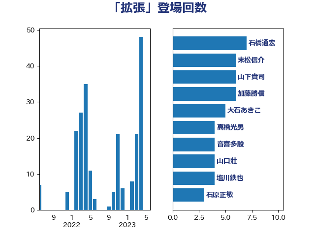

単語「拡張」

| 石橋通宏 | 立憲民主党 | 7 回 |
| 末松信介 | 自由民主党 | 6 回 |
| 山下貴司 | 自由民主党 | 6 回 |
| 加藤勝信 | 自由民主党 | 6 回 |
| 大石あきこ | れいわ新選組 | 5 回 |
| 高橋光男 | 公明党 | 4 回 |
| 音喜多駿 | 日本維新の会 | 4 回 |
| 山口壯 | 自由民主党 | 4 回 |
| 塩川鉄也 | 日本共産党 | 4 回 |
| 石原正敬 | 自由民主党 | 3 回 |
| 松本剛明 | 自由民主党 | 3 回 |
| 太栄志 | 立憲民主党 | 3 回 |
| 塩村あやか | 立憲民主党 | 3 回 |
| 青木愛 | 立憲民主党 | 2 回 |
| 鈴木義弘 | 国民民主党 | 2 回 |
| 足立敏之 | 自由民主党 | 2 回 |
| 赤嶺政賢 | 日本共産党 | 2 回 |
| 落合貴之 | 立憲民主党 | 2 回 |
| 萩生田光一 | 自由民主党 | 2 回 |
| 石井苗子 | 日本維新の会 | 2 回 |
| 田村貴昭 | 日本共産党 | 2 回 |
| 玉木雄一郎 | 国民民主党 | 2 回 |
| 有村治子 | 自由民主党 | 2 回 |
| 新垣邦男 | 立憲民主党 | 2 回 |
| 斎藤アレックス | 国民民主党 | 2 回 |
| 川田龍平 | 立憲民主党 | 2 回 |
| 小川淳也 | 立憲民主党 | 2 回 |
| 室井邦彦 | 日本維新の会 | 2 回 |
| 塩崎彰久 | 自由民主党 | 2 回 |
| 前川清成 | 日本維新の会 | 2 回 |
| 八木哲也 | 自由民主党 | 2 回 |
| 佐々木紀 | 自由民主党 | 2 回 |
| 伊波洋一 | 無所属 | 2 回 |
| 仁木博文 | 無所属 | 2 回 |
| 井上哲士 | 日本共産党 | 2 回 |
| 上田清司 | 国民民主党 | 2 回 |
| 高橋はるみ | 自由民主党 | 1 回 |
| 高村正大 | 自由民主党 | 1 回 |
| 須藤元気 | 無所属 | 1 回 |
| 長浜博行 | 無所属 | 1 回 |
| 長峯誠 | 自由民主党 | 1 回 |
| 鎌田さゆり | 立憲民主党 | 1 回 |
| 遠藤良太 | 日本維新の会 | 1 回 |
| 谷公一 | 自由民主党 | 1 回 |
| 西田実仁 | 公明党 | 1 回 |
| 西村明宏 | 自由民主党 | 1 回 |
| 西村康稔 | 自由民主党 | 1 回 |
| 茂木敏充 | 自由民主党 | 1 回 |
| 若松謙維 | 公明党 | 1 回 |
| 稲田朋美 | 自由民主党 | 1 回 |
| 稲津久 | 公明党 | 1 回 |
| 秋葉賢也 | 自由民主党 | 1 回 |
| 福田昭夫 | 立憲民主党 | 1 回 |
| 福島伸享 | 無所属 | 1 回 |
| 田村まみ | 国民民主党 | 1 回 |
| 田中健 | 国民民主党 | 1 回 |
| 清水貴之 | 日本維新の会 | 1 回 |
| 清水真人 | 自由民主党 | 1 回 |
| 浦野靖人 | 日本維新の会 | 1 回 |
| 浜田靖一 | 自由民主党 | 1 回 |
| 浅野哲 | 国民民主党 | 1 回 |
| 浅田均 | 日本維新の会 | 1 回 |
| 河野義博 | 公明党 | 1 回 |
| 池下卓 | 日本維新の会 | 1 回 |
| 永岡桂子 | 自由民主党 | 1 回 |
| 榛葉賀津也 | 国民民主党 | 1 回 |
| 柴田巧 | 日本維新の会 | 1 回 |
| 朝日健太郎 | 自由民主党 | 1 回 |
| 新妻秀規 | 公明党 | 1 回 |
| 斉藤鉄夫 | 公明党 | 1 回 |
| 後藤茂之 | 自由民主党 | 1 回 |
| 平林晃 | 公明党 | 1 回 |
| 平将明 | 自由民主党 | 1 回 |
| 山添拓 | 日本共産党 | 1 回 |
| 小西洋之 | 立憲民主党 | 1 回 |
| 小沼巧 | 立憲民主党 | 1 回 |
| 小池晃 | 日本共産党 | 1 回 |
| 寺田稔 | 自由民主党 | 1 回 |
| 宮本徹 | 日本共産党 | 1 回 |
| 安江伸夫 | 公明党 | 1 回 |
| 加藤竜祥 | 自由民主党 | 1 回 |
| 住吉寛紀 | 日本維新の会 | 1 回 |
| 中川正春 | 立憲民主党 | 1 回 |